Lepšie raz vidieť…
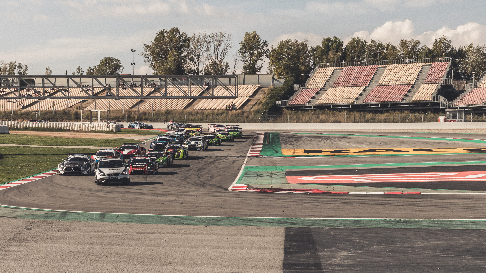 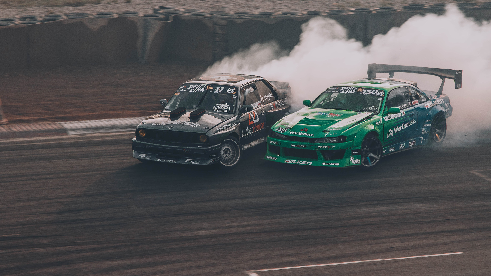 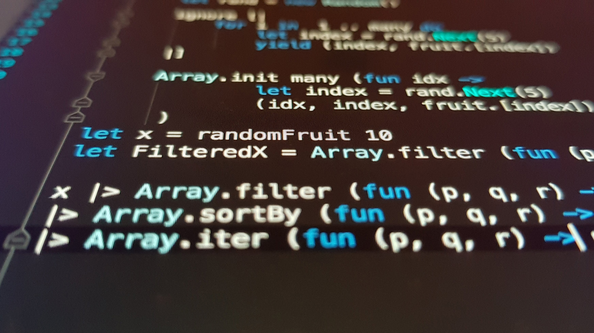
 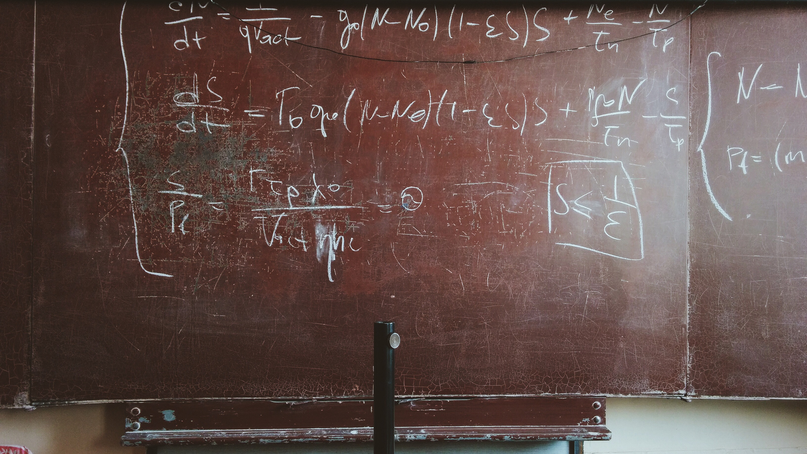
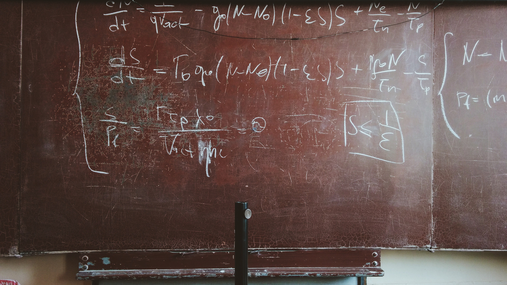
 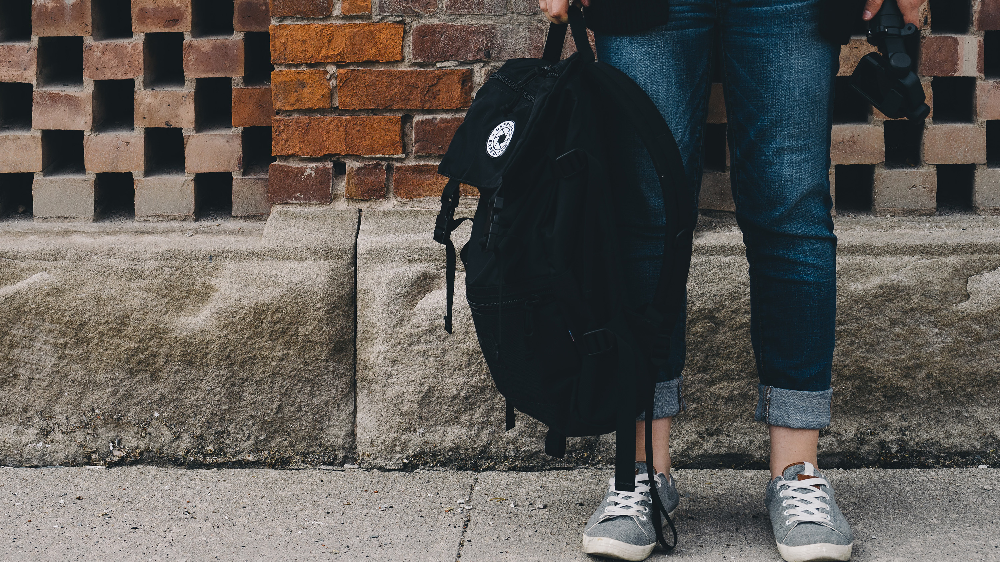
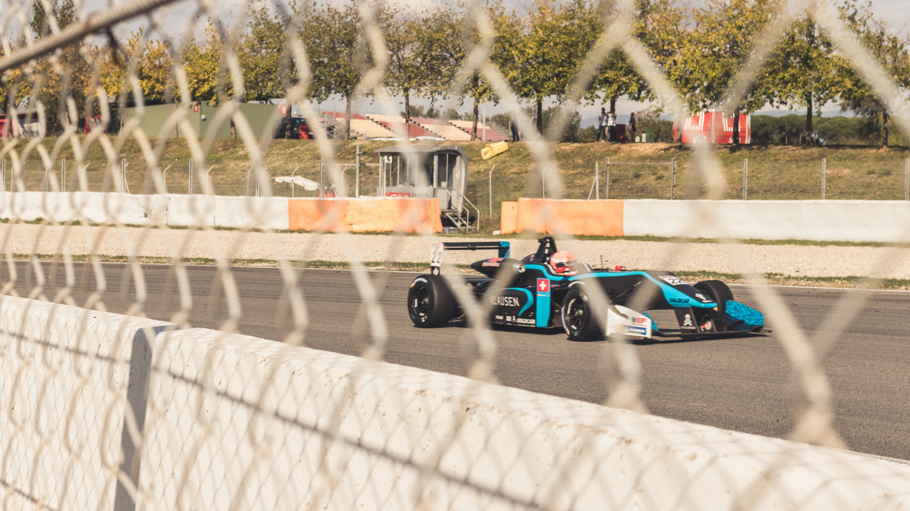
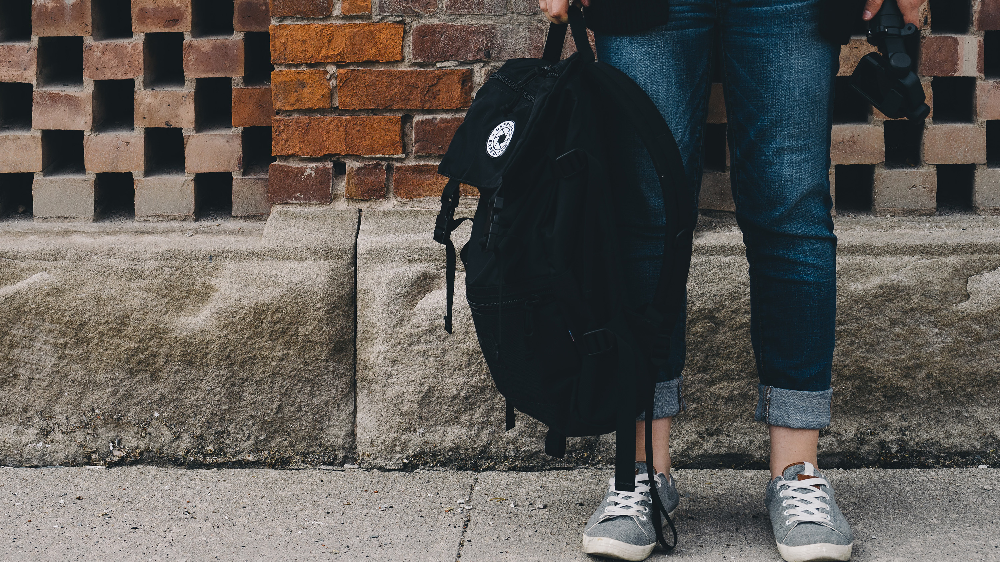
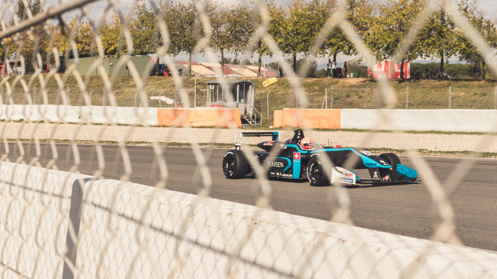

Greenpower je pôvodom britský projekt, v ktorom je pred žiakov postavená jednoduchá výzva: Postavte vlastnú elektrickú formulu a zúčastníte sa v nej pretekov!
Cieľom projektu je rozvíjať u žiakov schopnosť riešiť komplexné problémy a rozvíjať technické aj komunikačné zručnosti, ale aj vytvárať vzdelávaciu cestu od základných škôl, cez stredné a vysoké školy až k zamestnávateľom v odvetviach STEM.
Greenpower je populárny a úspešný vzdelávací projekt, ktorý vznikol za účelom rozvinúť nadšenie detí a mladých ľudí pre vedu a techniku a podporiť tak prípravu budúcej pracovnej sily pre potreby priemyslu v 21. storočí.
Projekt vznikol vo Veľkej Británii (1999), každoročne sa ho zúčastňuje viac než 10 000 študentov od základných škôl až po univerzity, nielen v Británii ale aj v zahraničí (USA, Čína, Singapur, JAR, Poľsko, India atď.)
V projekte je pred tímy žiakov a študentov postavená výzva: navrhnúť a zostaviť zo stavebnice) elektrické auto, s ktorým sa potom zúčastní pretekov. Súťažný tím v nižších kategóriách tvorí zvyčajne jedna trieda (zvyčajne od 6 do 20 žiakov).
Projekt pomáha odomknúť potenciál a vzbudiť nadšenie pre vedu, technológiu, inžinierstvo a matematiku (STEM) prostredníctvom nadšenia a neopakovateľných výziev a zážitkov z pretekov elektrických automobilov. Okrem toho sa v priebehu projektu žiaci učia najpodstatnejšie "soft skills" a zručnosti pre 21. storočie.
Greenpower vznikol z dôvodu riešenia problému budúceho nedostatku kvalifikovaných inžinierov v priemysle, pretože neustále klesal počet študentov prejavujúcich záujem o profesionálnu dráhu v inžinierskej profesii.
To, že projekt existuje už 10 rokov, stále rastie, rozširuje sa aj iných krajín po celom svete a dokázal pritiahnuť a udržať veľa silných sponzorov z oblasti priemyslu a IT sektoru (Siemens, iBMW, Ford Lockheed Martin a.i.) značí, že tento systém dokáže napĺňať stanovené ciele a je dlhodobo udržateľný.
Zároveň o kvalite projektu svedčia aj pozitívne ohlasy organizácii venujúcich sa kariérnemu poradenstvu v krajinách, kde projekt prebieha.
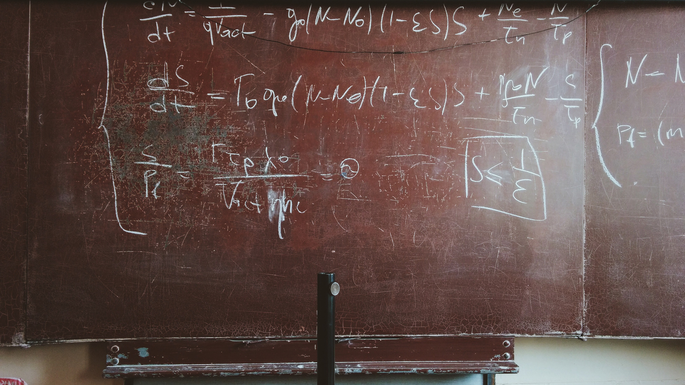
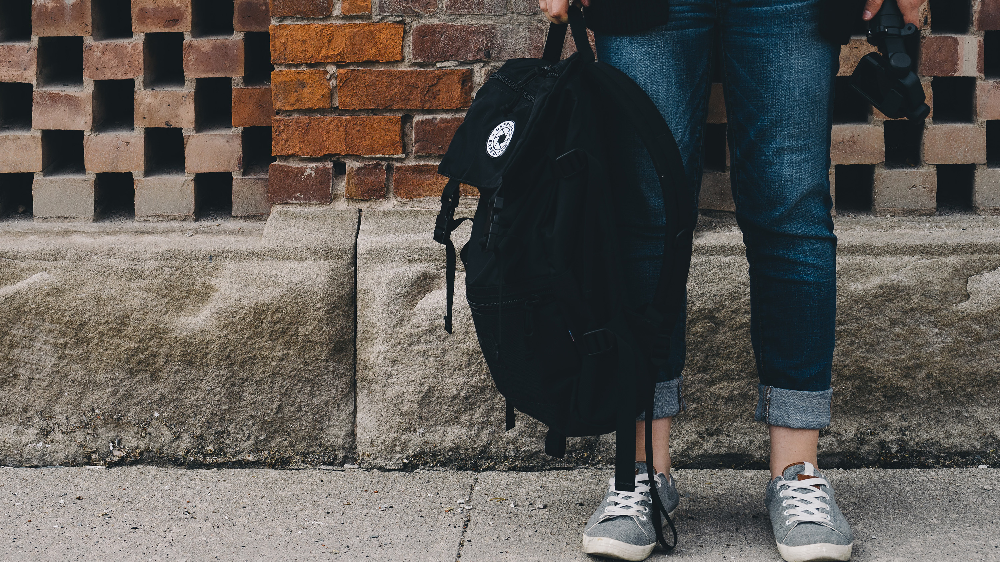
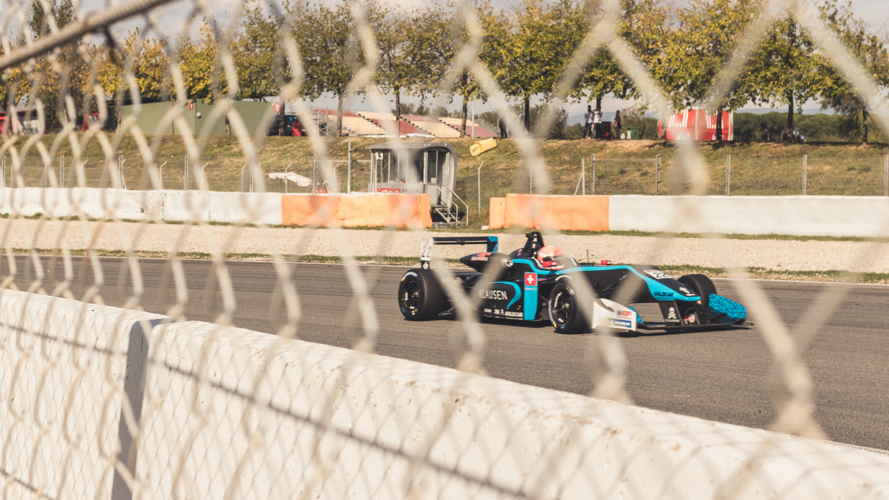
Je to overený projekt, ktorý napĺňa svoje ciele a je dlhodobo udržateľný. Vo vzdelávaní je málo takto dlho fungujúcich vzdelávacích projektov.
Podstatou dlhodobého úspechu projektu spočíva v tom, že dokáže žiakov podchytiť už od 4. - 5. ročníka ZŠ a postupne, prostredníctvom viacerých na seba nadväzujúcich výziev ich dlhodobo viesť k inžinierskej profesii, ukončenej stredoškolským, alebo vysokoškolským vzdelaním. Takýto spôsob získavania mládeže pre techniku sa ukazuje oveľa efektívnejším, ako jednorázové náborové kampane zamerané na techniku.
Projekt nie je len súťaž, dokáže vytvárať komplexný vzdelávací ekosystém, ktorý organicky dopĺňa vzdelávanie na školách a dáva učeniu zmysel. Prepája základné školy so strednými a vysokými školami. Na druhej strane spája školy, podnikateľov a podniky, samosprávy ale aj rodičov žiakov.
Sila Greenpower spočíva aj v atraktivite projektu. Dokáže na seba naviazať a spolupracovať s inými vzdelávacími organizáciami a ich projektmi a vytvárať tak bohatý ekosystém navzájom prepojených projektov na podporu STEM.
Projekt Greenpower sa zameriava aj na rozvoj tzv. mäkkých zručností, ktoré sú neoddeliteľnou súčasťou vlastností pracovníka v 21. storočia. Cielene podporuje a rozvíja napr. prácu v tíme, vytrvalosť, zodpovednosť za vlastné vzdelávanie, kreativitu, odolnosť, nadšenie a zvedavosť.
Projekt Greenpower sa dokázal organicky integrovať so školskými vzdelávacími plánmi a vytvoril tak platformu, pre nepriamy, no účinný a fungujúci spôsob, ako môžu zástupcovia priemyslu ovplyvňovať vzdelávanie na školách.
Má prepracovaný systém podpory a služieb učiteľom a žiakom, ako aj kontrolu dosiahnutia stanovených cieľov. Projekt poskytuje aj kvalitné a overené vzdelávacie materiály.
Projekt dokáže viesť žiakov k hľadaniu riešení, ako môže technológia prispieť k riešeniu problémov životného prostredia. V projekte Greenpower sú študenti vedení k tomu, že technológia je nástroje na riešenie problémov, nie je samotným cieľom. Greenpower vedie študentov pri návrhoch svojich projektov, aby sa zamýšľali nad dopadom technológii na životné prostredie.
Projekt je sa postupne zaradil medzi známe a rešpektované vzdelávacie projekty (GB, USA, Čína, a.i). Je mu venovaná dostatočná mediálna pozornosť. Do propagáciu projektu sa zapájajú verejne známe osobnosti (napr. podpora Alžbety II.). Finálne kolo pretekov sa uskutočňuje na skutočných pretekárskych okruhoch (napr. Goodwood, Indianapolis, atď.), kde sa zúčastňuje rádovo tisíce ľudí (žiaci a študenti, rodičia, podporovatelia).
Projekt Greenpower sa zameriava na prípravu študentov pre pracovný trh v znalostnej ekonomike. Pripravuje ich na "neistý a rýchlo meniaci sa svet". Podporuje také nástroje myslenia, ktoré pomáhajú sa vyrovnať danou dobou.
Projekt Greenpower dokáže žiakom pomerne verne načrtnúť ich budúci svet práce a učiteľom ukázať smer, ktorým sa transformuje rola učiteľa vo vzdelávaní a to všetko atraktívnou a zábavnou formou.
Automobilový pretekársky tím v projekte Greenpower totiž verne simuluje činnosť malej inovatívnej technologickej firmy fungujúcej v konkurenčnom prostredí. K víťazstvu v pretekoch vedú dobré inovácie. Dieťa takto zábavnou formou už v 5. ročníku pochopí základné princípy sveta práce v ktorom bude fungovať. Učenie mu dáva potom iný zmysel.
V projekte sa mení rola učiteľa a stáva sa sprievodcom žiaka za poznaním. Podporuje vznik blokového vyučovania, personalizovaného vzdelávania, využívania mentoringu. Projekt takto dokáže prispievať k postupnej a potrebnej transformácii vzdelávacieho procesu na školách, ktoré sa zapoja do projektu.
Projekt je univerzálny, lebo pod jednou organizáciou vznikajú vysokoškolské, stredoškolské a projekty tímov zo základných škôl. Projekt takto navzájom prepája školy a podporuje ich spoluprácu pri výchove a rozvoji technických talentov. Táto spolupráca preukázateľne prináša výsledky pre všetky zúčastnené strany.
1. Etapa: (šk. r. 2018 / 2019) pilotný projekt
Zapojiť 7 bratislavských ZŠ do projektu Goblin a 3 bratislavské SŠ do projektu f - 24
Nadviazať spoluprácu s pedagógmi z STU Bratislava, ktorý budú odbornými garantmi projektu, prípadne mentormi.
Do konca mája 2019 uskutočniť prvé pilotné preteky bratislavských škôl, kde sa výsledky projektu sa odprezentujú potenciálnym školám, ktoré by sa mohli zapojiť, sponzorom, podporovateľom, spolupracovníkom.
Vytvoriť základnú organizačnú štruktúru projektu Greenpower.
Zabezpečiť udržateľné financovanie projektu.
Nadviazať spoluprácu s ďalšími vzdelávacími organizáciami a hľadať formy vzájomne výhodnej spolupráce, za účelom postupného vytvorenia uceleného, na seba nadväzujúceho a udržateľného systému projektov, podporujúcich rozvoj STEM.
2. Etapa: Pilotné (regionálne) preteky formule Goblin (šk. r. 2019/2020)
Ďalej rozširovať projekt Greenpower o ďalšie bratislavské školy, so zameraním sa na stredoškolské projekty
Zapojenie škôl z ďalšieho krajského mesta (aspoň jedného)
Nadviaže sa oficiálna spolupráca s organizáciou Greenpower vo Veľkej Británii za účelom získania oficiálnej licencie Greenpower.
Zorganizovanie regionálnych pretekov a jedného celoslovenského kola.
3. Etapa: Uskutočnenie prvého oficiálneho Slovenského kola (kôl) Greenpower a zisk oficiálne licencie projektu Greenpower.